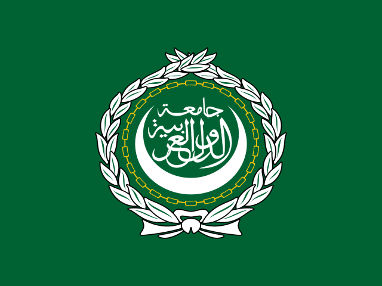

EN • MASTER
EN • MASTER
English
Official Master Genesis Covenant
Format: PDF (Document Edition)
Version: 3.0 (October 2026)
Verification: Sealed by Citizen Zero #0
Version: 3.0 (October 2026)
Verification: Sealed by Citizen Zero #0
 FR • OFFICIEL
FR • OFFICIEL
Français
Charte Officielle de Consensus Souverain
Format: PDF (Édition Officielle)
Version: 3.0 (Octobre 2026)
Statut: Ratifié par le Conseil de la Genèse
Version: 3.0 (Octobre 2026)
Statut: Ratifié par le Conseil de la Genèse
 ES • OFICIAL
ES • OFICIAL
Español
Tratado Oficial de Consenso Soberano
Formato: PDF (Edición Documental)
Versión: 3.0 (Octubre 2026)
Verificación: Ratificado por Ciudadano Cero
Versión: 3.0 (Octubre 2026)
Verificación: Ratificado por Ciudadano Cero

AR • الميثاق الرسميالعربية
الميثاق الرسمي التأسيسي للبروتوكول السيادي
الصيغة: PDF (النسخة الرسمية الكاملة)
الإصدار: 3.0 (أكتوبر 2026)
التوثيق: معتمد وموقّع من المواطن صفر (#0)
الإصدار: 3.0 (أكتوبر 2026)
التوثيق: معتمد وموقّع من المواطن صفر (#0)
 RU • МАНИФЕСТ
RU • МАНИФЕСТ
Русский
Официальный Суверенный Манифест
Формат: PDF (Полное Руководство)
Версия: 3.0 (Октябрь 2026)
Статус: Утверждено Гражданином Ноль
Версия: 3.0 (Октябрь 2026)
Статус: Утверждено Гражданином Ноль
ZH • 官方宪章
中文
中文官方主权共识宪章
格式: PDF (主权技术规范全本)
版本: 3.0 (2026年10月)
权威认证: 由公民零号（#0）签署生效
版本: 3.0 (2026年10月)
权威认证: 由公民零号（#0）签署生效